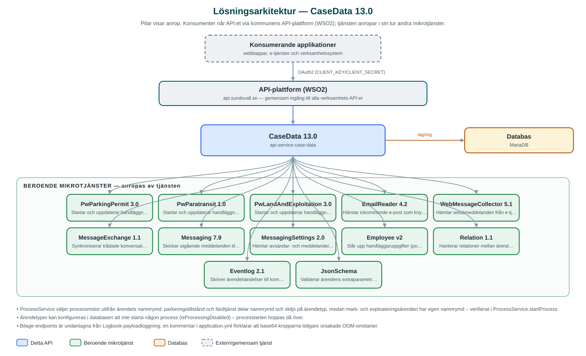

CaseData
Ärendehanterings-API som lagrar och förvaltar myndighetsärenden – bland annat parkeringstillstånd, färdtjänst samt mark- och exploateringsärenden – åt kommunens handläggarapplikationer.
Om API:et
CaseData är kommunens datanav för myndighetsärenden. API:et lagrar ärenden med parter, fastigheter/anläggningar, beslut, bilagor, anteckningar och statusar, och exponerar allt per kommun och namnrymd (namespace). Idag hanteras bland annat parkeringstillstånd, färdtjänst och mark- och exploateringsärenden, där varje verksamhetsområde har sin egen namnrymd.
När ett ärende skapas startar API:et automatiskt en tillhörande handläggningsprocess i rätt processmotor utifrån ärendets namnrymd och ärendetyp, och vid uppdateringar meddelas processen så att handläggningen drivs vidare. Ärendetyper kan konfigureras att inte starta någon process alls.
API:et samlar också in inkommande kommunikation till ärendena: schemalagda jobb hämtar e-post via EmailReader och webbmeddelanden via WebMessageCollector varje minut, och konversationer synkroniseras mot MessageExchange. Alla ändringar på ärenden, beslut, parter med mera versionshistorieförs med Javers och kan läsas ut via history-endpoints.
Det här gör API:et
- Ärenden med fullständig ärendebild – CRUD för ärenden med parter (stakeholders), fastigheter/anläggningar, beslut, bilagor, anteckningar, statusar och extraparametrar.
- Automatisk processtart – När ett ärende skapas startas en handläggningsprocess i rätt processmotor (parkeringstillstånd, färdtjänst eller mark och exploatering) utifrån namnrymd och ärendetyp.
- Meddelanden och konversationer – Meddelanden per ärende, inklusive utgående meddelanden via Messaging och trådade konversationer via MessageExchange.
- Automatisk insamling av inkommande post – Schemalagda jobb hämtar inkommande e-post och webbmeddelanden från e-tjänster och knyter dem till rätt ärende.
- Ändringshistorik – Alla ändringar på ärenden, beslut, parter, anteckningar, bilagor och anläggningar versionshanteras med Javers och exponeras via history-endpoints.
- Notifieringar till handläggare – Notifieringar per ärende och användare, med uppslag av handläggaruppgifter via Employee och daglig rensning av inaktuella notifieringar.
- Metadata och parkering av ärenden – Metadata över ärendetyper per namnrymd samt tidsstyrd parkering (suspension) av ärenden som automatiskt återaktiveras när tiden löpt ut.
API-dokumentation
API:ets samtliga resurser, parametrar och datamodeller finns beskrivna i en OpenAPI-specifikation som är hämtad ur källkodsförrådet. Den kan utforskas interaktivt i Swagger UI eller laddas ner som YAML. Programvaruförteckningen (SBOM) listar tjänstens samtliga tredjepartskomponenter med version och licens.
Teknisk dokumentation
Nedan beskrivs hur tjänsten är uppbyggd, vilka andra tjänster den anropar och vad som krävs för att driftsätta den. Informationen är härledd ur källkoden och dess konfiguration på GitHub.
Arkitektur

API:et är en mikrotjänst (Java 21, Spring Boot via kommunens gemensamma tjänsteplattform dept44 (8.0.8), byggd med Maven). Konsumenter når tjänsten via kommunens gemensamma API-plattform (WSO2) på api.sundsvall.se – tjänsten anropas aldrig direkt. Tjänsten anropar i sin tur andra mikrotjänster i kommunens tjänstelandskap. Lagring: MariaDB med Flyway-migrationer; ärenden med beslut, parter och bilagor lagras tillsammans med Javers-ändringshistorik.
Teknikstack
- Språk: Java 21
- Ramverk: Spring Boot via kommunens gemensamma tjänsteplattform dept44 (8.0.8), byggd med Maven
- Databas: MariaDB med Flyway-migrationer; ärenden med beslut, parter och bilagor lagras tillsammans med Javers-ändringshistorik
- Övrigt: Javers för ändringshistorik, schemalagda jobb med Shedlock-låsning (dept44-starter-scheduler), Resilience4j (circuit breakers), Feign-klienter, Logbook för anropsloggning
Beroenden till andra mikrotjänster
Tjänsten anropar följande mikrotjänster. Versionerna är hämtade ur källkodens integrationsklienter.
| Tjänst | Version | Användning |
|---|---|---|
| PwParkingPermit | 3.0 | Startar och uppdaterar handläggningsprocesser för parkeringstillståndsärenden. |
| PwParatransit | 1.0 | Startar och uppdaterar handläggningsprocesser för färdtjänstärenden. |
| PwLandAndExploitation | 3.0 | Startar och uppdaterar handläggningsprocesser för mark- och exploateringsärenden. |
| EmailReader | 4.2 | Hämtar inkommande e-post som knyts till ärenden via schemalagt jobb. |
| WebMessageCollector | 5.1 | Hämtar webbmeddelanden från e-tjänsteplattformen via schemalagt jobb. |
| MessageExchange | 1.1 | Synkroniserar trådade konversationer kopplade till ärenden. |
| Messaging | 7.9 | Skickar utgående meddelanden till ärendets parter. |
| MessagingSettings | 2.0 | Hämtar avsändar- och meddelandeinställningar för utskick. |
| Employee | v2 | Slår upp handläggaruppgifter (portalpersondata) för notifieringar. |
| Relation | 1.1 | Hanterar relationer mellan ärenden vid konversationssynkronisering. |
| Eventlog | 2.1 | Skriver ärendehändelser till kommunens centrala händelselogg. |
| JsonSchema | – | Validerar ärendens extraparametrar mot JSON-scheman. |
Programvaruförteckning
Tjänsten bygger på 273 tredjepartskomponenter fördelade på 13 olika licenser. Till skillnad från tabellen ovan, som listar andra mikrotjänster, avses här de programbibliotek som ingår i bygget. Se programvaruförteckningen för hela listan.
Konfiguration och driftsättning
- application.yml med base-url och OAuth2-klientuppgifter (client-id/client-secret) för samtliga tolv beroende mikrotjänster
- MariaDB-anslutning; databasschemat versionshanteras med Flyway
- Namnrymder per processmotor konfigureras via integration.parkingpermit/landandexploitation.supported-namespaces
- Cron-uttryck och Shedlock-låstider för de fem schemalagda jobben (e-post, webbmeddelanden, konversationer, suspensioner, notifieringar)
- Anrop görs per kommun och namnrymd – municipalityId och namespace ingår i alla API-vägar
Noterbart ur källkoden
- ProcessService väljer processmotor utifrån ärendets namnrymd: parkeringstillstånd och färdtjänst delar namnrymd och skiljs på ärendetyp, medan mark- och exploateringsärenden har egen namnrymd – verifierat i ProcessService.startProcess.
- Ärendetyper kan konfigureras i databasen att inte starta någon process (isProcessingDisabled) – processtarten hoppas då över.
- Bilage-endpoints är undantagna från Logbook-payloadloggning; en kommentar i application.yml förklarar att base64-kropparna tidigare orsakade OOM-omstarter.
- README beskriver tjänsten som hantering av parkeringstillstånd samt mark och exploatering, men koden hanterar även färdtjänstärenden via PwParatransit – koden är sanningskällan.
Källkod
Källkoden är öppen och finns hos Sundsvalls kommun på GitHub. I källkodsförrådet finns även instruktioner för att klona, konfigurera och starta tjänsten i egen miljö.